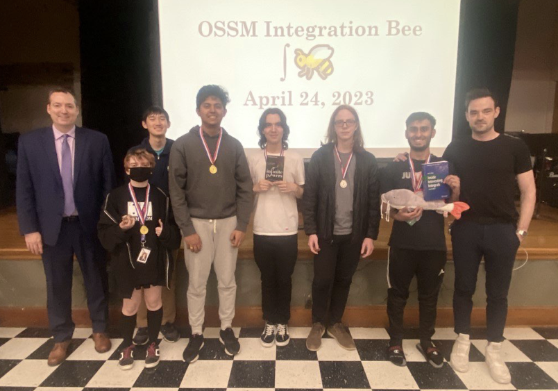

The Oklahoma School of Science and Mathematics (OSSM) Integration Bee is an annual math competition ran by the OSSM Mathematics department every Spring semester. The Integration Bee serves the dual aims of strengthening the OSSM math community and preparing students for AP Calculus Exams in May.
You know the classics like ∫ sin(x) dx = – cos(x) + C and ∫ x dx = x2/2 + C, but do you have the skills to take it to the next level? Want to impress your friends with your integration prowess? Or see your roommate race to perform just the right integration by parts? Join us at the OSSM Integration Bee, where the OSSM math community comes together to solve integrals in the style of a spelling bee!
The OSSM Integration Bee is split into two tournaments: an Individual tournament and a Team tournament. Any OSSM student may participate in the Team tournament, but participation in the Individual tournament requires strong preformance on a written Qualifier Exam. The Qualifer Exam is given in the days and weeks leading up to the Bee, and Qualifer Exam scores are used to seed the Individual tournament.
Both tournaments of the Bee consist of single-elimination matches between individuals/teams, with each match decided by the best of several timed rounds. During a round, competitors race to solve a given integral on whiteboard in front of Integration Bee attendees. The first competitor to correctly calculate the given integral wins that round.
TBD
The 1st Annual OSSM Integration Bee took place in the Manning Academic Center Auditorium on Monday, April 24th, 2023.
Left to right: Prof. Cornforth, Julie Macedo, Billy Zhao, Damodar Pai, Christian Fidel, Jonas Swope, Mohammad Mian, Dr. Cook
The following students qualified for the Individual tournament of the Bee, with seeding determined from the Qualifer Exam: